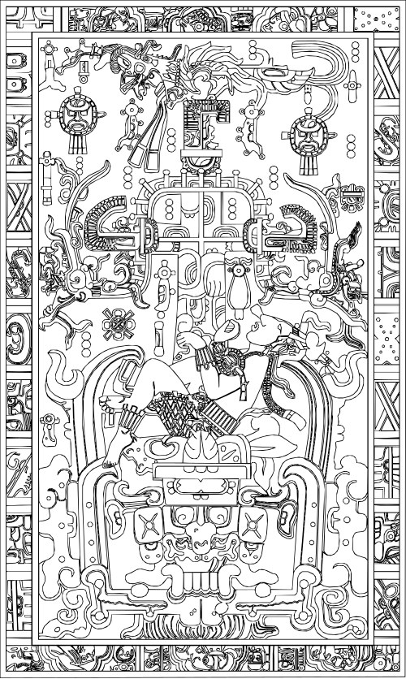

THE INSCRIPTION
The ajaw of Palenque, carved in stone for thirteen centuries, whose technique roots battlefields to the road to Xibalba — so the slain of the field rise as witnesses, and the cost of the battle becomes legible.

THE INSCRIPTION
The ajaw of Palenque, carved in stone for thirteen centuries, whose technique roots battlefields to the road to Xibalba — so the slain of the field rise as witnesses, and the cost of the battle becomes legible.
Feature map
Level-by-level features, as the figure refined them.
The Road Beneath
Bonus action · 2 CE · 1 minute (concentration).
Tier IV · Controller · suggested CE ability INT · Primary verb: Record. Technique DC = 8 + proficiency bonus + INT modifier. What is written cannot be unwritten. What is witnessed cannot be denied. The Inscription opens the road to Xibalba beneath the battlefield — not to raise armies, but to make the slain present as witnesses. Witness. An intangible shade of one slain. It cannot act, attack, or be harmed; it occupies its space and observes. Witnesses last 1 hour. Pakal can maintain a number of Witnesses equal to his proficiency bonus at once (if a new Witness would exceed this number, the oldest ends).
A 30-ft radius sphere of ground centered on a point he can see within 90 ft shows the road to Xibalba through it. When a creature is reduced to 0 hit points inside the radius, a Witness rises from it. (The road was always there. He merely inscribes it.)
Testimony
Action · 1 CE.
Question one Witness within 60 ft: learn who dealt the killing blow, how much damage was dealt, and the slain creature's final intent, in one sentence. (The dead are the most reliable witnesses. They have nothing left to lose.)
The Slain Are Present
Passive.
While at least one Witness stands within 60 ft of Pakal, his allies have advantage on Insight and Perception checks, and hostile creatures within 60 ft have disadvantage on Deception checks. (Lies told over graves ring hollow.)
The Weight of the Count
Action · 3 CE.
Each hostile creature within 60 ft that has reduced another creature to 0 hit points within the last minute must make an Intelligence saving throw against his technique DC. On a failure, it takes 2d8 psychic damage per Witness he maintains (maximum 10d8); half damage on a success. (The cost, made legible, has weight.)
Nine Steps Down
Action · 4 CE · 1 minute (concentration).
The road deepens: choose a point he can see within 90 ft; a 30-ft radius sphere there becomes the deep road for 1 minute (concentration). If The Road Beneath is active, it ends — Witnesses still rise from creatures reduced to 0 hit points inside, as with The Road Beneath. The area is difficult terrain for hostile creatures, and a hostile creature that falls prone inside it is restrained by the roots of the World Tree until it uses an action to break free (Strength saving throw against his technique DC ends it). (Nine steps down. The roots remember every foot.)
The Stone Remembers
Passive.
He is immune to any effect that would alter or erase his memory. When he sees a creature use a named technique feature or cast a spell, he learns its true name. (Carved things do not forget.)
The Witnesses Speak
Action · 6 CE · once per short rest.
Every hostile creature within 60 ft must make a Wisdom saving throw against his technique DC. On a failure, it is frightened of the Witnesses for 1 minute; it may repeat the saving throw at the end of each of its turns, ending the effect on a success. While frightened this way, it has disadvantage on attack rolls. (The slain, all at once, saying what was done.)
Maximum, Domain, or equivalent.
Capstone material.
Maximum: The Descent
He walks the road: he has resistance to all damage, can move through creatures and objects, and difficult terrain costs him no extra movement. Once during the minute, as a bonus action, he may drag one creature within 60 ft toward the road: it must succeed on an Intelligence saving throw against his technique DC or be pulled 30 ft toward the nearest Witness (if none stands, it is not moved) and restrained until the end of its next turn. (The king descends. The road knows him.)
The Inscription Beneath: Xibalba Road
The vaulted chamber under the Temple of the Inscriptions, the road running through it. Inside, the sure-hit is The Dead Are Present — every Witness he has raised in this battle returns at once (up to his maximum), and creatures reduced to 0 hit points inside the Domain raise Witnesses as with The Road Beneath (up to his maximum). At initiative 20, the dead recount: each hostile creature inside must succeed on an Intelligence saving throw against his technique DC or take 4d8 psychic damage as the dead recount its deeds — or it may confess, speaking aloud one true thing it did in this battle as a free action, and be immune to the recounting until the next initiative 20. (Heaven accepts the confession. The dead stand down.)
- Clash points
- 800
- Burnout
- 5 rounds
- Duration
- 2 minutes
- Radius
- 50-ft radius
- Activation ✦
- full-turn action
- CE cost ✦
- 20
✦ Canon: figure Domains are Specific Domains — the stated profile governs, not the player point-unlock table.
The Inscription Cannot Lie
Any effect that would compel him to speak or record falsehood fails against him. Once per long rest, when he would be reduced to 0 hit points, the stone keeps him: he is petrified at 1 hit point for 1 minute, remaining aware, and then returns. (He has been stone for thirteen centuries. He knows the posture.)
Build-defining options.
This technique grants Innate Technique Feats — hand-authored applications of the figure's art, available in the builder's feat picker when you select this technique.
Edge cases and shared systems.
Campaign canon notes